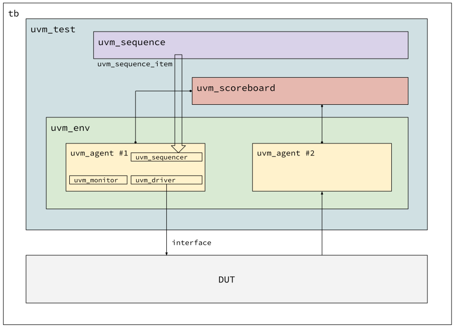

Introduction to UVM
Motive
UVM을 처음 들어본게 2011년 즈음이었던 것 같네요. 그때 삼성에서 처음 일을 시작했었는데, 검증은 specman 이라고 e language를 사용하여 하드웨어 모듈을 검증하고 있었던 기억이 납니다. 하드웨어 디자인은 Verilog-2001 을 썼고 검증은 e language를 쓰고 있었으니 검증 환경은 들여다보아도 도통 이해할 수 없는 것 투성이었네요.
그러던 와중에 같은 팀에 있던 외국인 엔지니어가 UVM을 한다는 말을 들었던 게 처음이었네요. 그 때 주장했던 바로는 systemverilog language를 쓰니 하나의 언어를 써서 디자인과 검증을 할 수 있다고 했었죠. PLI도 필요없다는 말에 솔깃했었습니다.
제가 검증환경을 만들 일이 없을 것 같았기에 그러고 관심을 끊었다가, AHCI1 검증환경을 만들라는 특명하에 다시 한번 보게 되었죠. 한 반나절 보았을까요? MFC로 프로그래밍도 해본 터라 객체지향 프로그래밍은 쉽게 접근할 수 있을 줄 알았는데 너무 어렵더군요. 이대로 계속 달려들었다가는 검증 환경 만들려다 시간 다 허비할 것 같아서 접고 순수 SystemVerilog 문법만을 이용해서 검증환경을 만들었습니다.
SystemVerilog class에 randomization 기능을 추가하고, transaction item도 만들고 해서 최대한 랜덤 시뮬레이션이 가능하게 만들었는데, 지금 돌이켜 보면 얼추 UVM 골격과 비슷하게 만들었었네요. 그 때 검증엔지니어들이 인도에 있었고 e language를 이용해서 검증하는 환경이 이미 있었기에, 제가 만드는 검증환경은 Turn-Around Time을 줄이기 위한 목적이 컸습니다. 덕분에 부담없이 가볍게 만들 수 있었죠. 랜덤하게 돌려서 하나라도 버그가 발견되면 땡큐였으니까요.
그러다 8년이 지난 지금에서야 다시 볼 기회가 생겼네요. 이번에도 수박 겉핥기 식이긴 하지만, 이번에 간단하게 UVM 환경을 만들어보면서 조금은 더 이해할 수 있게 된 것 같네요.
UVM

세부 사항이 빠져있긴 하지만, 위의 그림이 UVM을 이용하여 검증환경을 만드는 기본 뼈대가 됩니다. UVM을 이용해서 어떤 하드웨어 모듈이든지 다 검증할 수는 있지만, 특히 그 효과가 배가되는 하드웨어 모듈은 BUS interface를 쓰는 환경일 때 UVM이 효과가 큰것 같네요. AXI나 AHB, PCIe 등 표준 프로토콜을 통해 request 를 받고 response를 보내는 경우 UVM을 이용하면 복잡한 부분은 최대한 한곳으로 몰아넣고 굵직굵직한 정보들만 UVM 블럭 사이에서 주고받아 시뮬레이션 속도를 크게 떨어트리지 않게 되는 것 같습니다.
이것을 TLM (Transaction Level Modeling) 이라고 부르는 데, 이 부분은 처음에는 이해하기 어려우니 간단히 용어만 알고 넘어가는 게 좋겠습니다. 조금 비유를 해 보자면, 빵을 하나 하나 만들어서 보내주는 게 아니라, 빵을 만드는 레시피를 하나씩 던져주고 다음 레시피를 줄 때 까지 놀고있는 것을 생각하면 좋겠네요.
그러면 누군가는 언젠가, 빵을 만들어야 하는데 (그래야 위에서 보이는 DUT에 정확한
정보를 전달할 수 있겠죠), 그것을 전담하는 블럭이 uvm_driver입니다.
Transaction, 혹은 uvm_sequence_item이라 불리는 하나의 레시피를 받아서 DUT가
이해할 수 있는, 예를 들면 AXI의 경우, AXI arvalid, araddr 등의 시그널을
전달하는 역할을 합니다.
제가 이해하기로는, 레시피를 전달해 주는 순서는 uvm_sequence 블럭이 정하고,
그것을 uvm_agent의 uvm_sequencer에게 던져줍니다. 두 사이를 연결하는 것은
나중에 좀 더 자세히 다루고 지금은 어떻게 흘러가는 지만 집중해서 이해하는 게
좋겠습니다.
uvm_driver는 uvm_sequencer에서 uvm_sequence_item을 가져올 게 있는지
지켜보다가 가져올 것이 있으면 그 안의 내용을 기반으로 interface를 drive
합니다. 예를 들면, 어느 주소에 어떤 값을 써라는 uvm_sequence_item을 받으면 AXI
address write channel에 값을 기록하고 write channel에 데이터를 싣고 valid 띄우는
일련의 순서를 차근차근 해 나가는거죠. 데이터를 다시 돌려줘야 할 필요가 있을 땐
(읽기 명령이라면 읽어들인 데이터를 리턴해야겠죠) 리턴 데이터를 다시
uvm_sequencer를 거쳐서 uvm_sequence로 전달해 줍니다.
이 과정 중 uvm_driver는 uvm_sequence_item을 가지고 동작할 뿐
uvm_sequencer나 uvm_agent, 또는 uvm_sequence 모듈과 직접 통신할 필요가
없습니다. 다른 모듈과 연계를 고민할 필요없이 uvm_driver만 규격에 맞게 디자인
하면 되는거죠.
다음에 uvm_sequence에 대해 이야기 할 때 자세한 데이터 흐름을 알려드릴테니
지금은, 시퀀스가 시퀀스아이템(트랜잭션)을 시퀀서에게 주고 그걸 드라이버가 받아서
DUT에게 신호를 전달한다 고 생각하면 되겠습니다. 여기서 제일 혼동되었던게 시퀀스,
시퀀서, 시퀀스 아이템 세개였습니다. 그게 그거같고 너무 어렵더군요. 데이터 흐름을
이해해야지만 이 세개가 조금은 덜 헷갈릴 겁니다.
데이터를 DUT에 전달하는 과정은 위와 같은데, 그것 말고도 UVM에서 또 한가지 중요한
게 있죠. 검증이라는 목적을 생각해 보면 이게 가장 중요한데요. 바로 DUT가 제대로
동작했는지 아닌지 확인하는 절차입니다. uvm_agent의 uvm_driver를 통해 DUT에
준 정보를 기반으로 DUT가 내부 로직을 실행할 테고 그 결과가 어떻게든 DUT의 포트로
나오게 될 겁니다. 예를 들어보면 DUT가 AXI 메모리라고 생각하면, 읽기 명령을
전달하면 DUT에서는 데이터가 읽혀서 read data channel로 응답이 나오겠죠. 이 것을
가지고, 이전에 쓰여졌던 값과 비교해서 맞는지 다른지 확인하는 과정입니다.
이 작업은 uvm_monitor에서부터 시작해서 uvm_scoreboard까지 전달되고
스코어보드가 들어오는 정보를 비교해서 DUT가 제대로 작업을 수행했는지 아닌지
확인하게 됩니다. 자세히 들어가면 uvm_monitor 도 조금 다른일을 하는 경우도 있고
uvm_scoreboard 안에도 크게 두개의 내부 블럭이 있지만 그건 나중에 설명하기로
하죠.
Conclusion
간단히 UVM 구조와 데이터 흐름을 살펴봤습니다. 이걸 안다고 해서 UVM 검증환경을
뚝딱 만들 수 있는 것은 아니고, 그저 수많은 .sv 파일 중 어떤 파일이 어떤 역할을
하는 지 좀 쉽게 찾게 도와주는 내용입니다. 보통 검증환경 구현할 때 원형 이름을
접미사로 붙여서 클래스 이름을 붙이거든요. 예를 들면, axi_master_agent.sv,
axi_master_driver.sv, axi_seq_item.sv 같이요.
위에서는 UVM 원형 클래스 이름을 들어 설명했는데 실제 구현은 클래스를 상속받아서 구현하게 됩니다. 객체지향 프로그래밍의 상속에 대해 좀 찾아보시고 이해하시면 앞으로 나올 내용이 조금은 이해하기 수월해 질 것 같네요.
-
AHCI는 PC와 저장장치(HDD, SSD) 사이에 데이터를 전송하는 규격 중 하나입니다. ↩